fuck you saidul/duldul/munn/snitchdul/patla paikahan / ghu eater / fire pad /muahahaha/snijder/padu/shaidul/snidul/padboy/no balls/skinny nigger/pacha r haddi ber hoye ase/ass flatter than A4 size paper/long hands small dih/slenderman
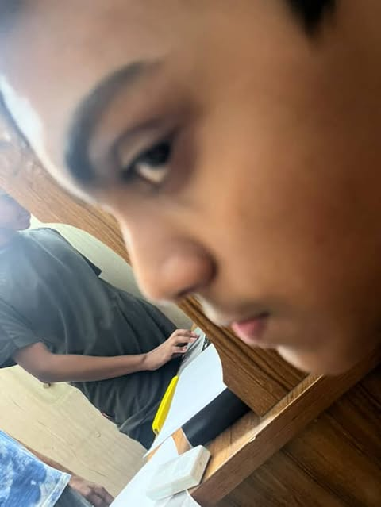
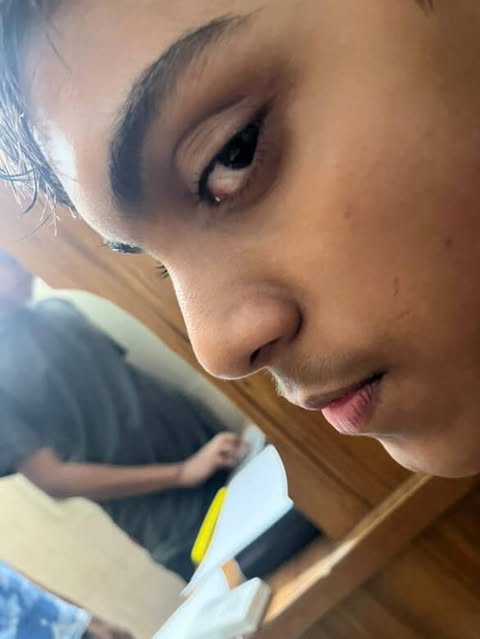
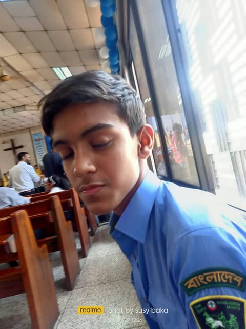
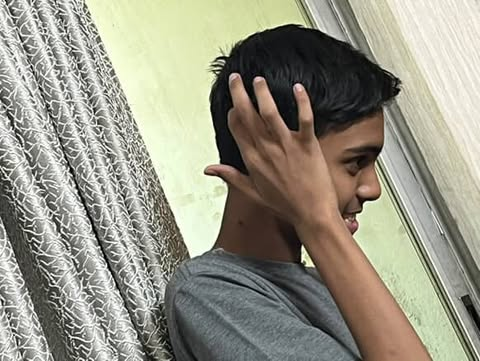
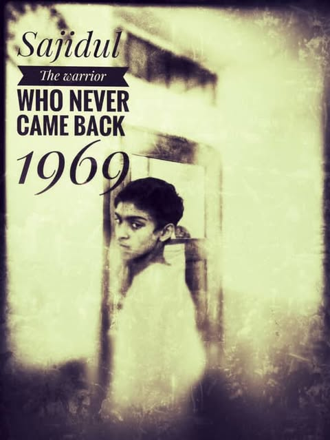
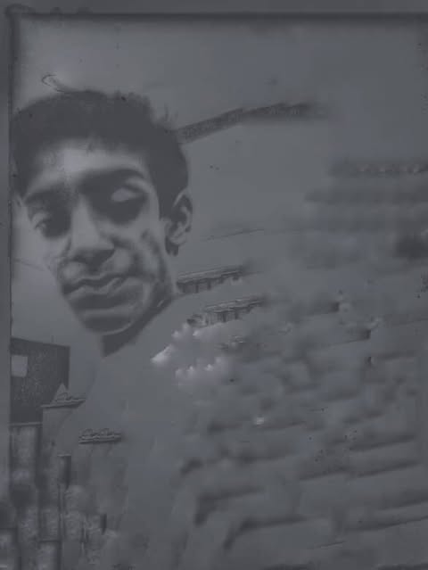
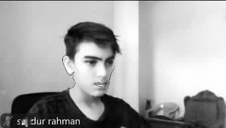
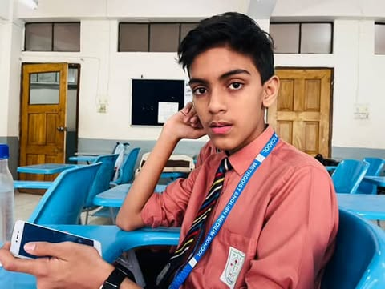
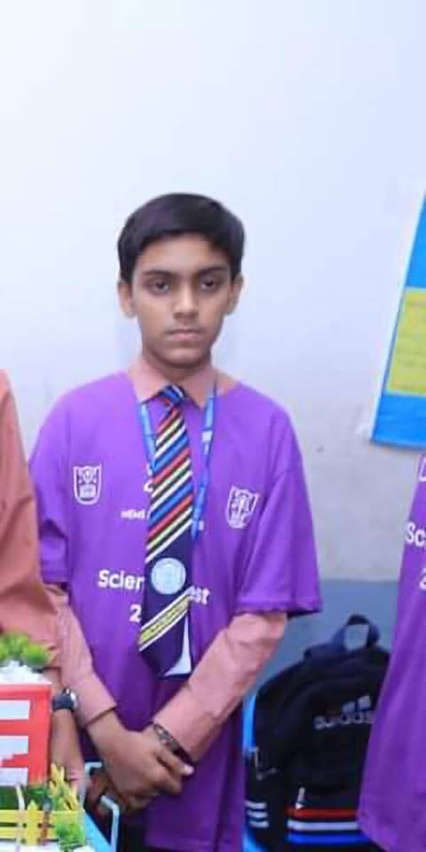
warning sajid have been found taking a shit with doors open and even with a microscope we couldn't see his dih. unemployed nigga tor kono biye hobe naa. if fire had ghu it would be sajidul.acts as nonchalant final boss but loses all his aura taking abt tehari. he looks like a a kola and vat had a baby. Bro acts tuff n strong but looks like a pitchulkani had hands n legs yet his dih is small. He looks like a majar r random dude sleeping unemployed at age 35 has no bitches head like andrew tate but with a baby face. is a cheap nohakhalilla, imagine you took money from black money but still hasn't return the money back like bro is a nohakhailla from blood.BLUD EATS KOLAVAT 10 TIMES A DAY AND THINKS HE HAS AURA. Bro eats like caseoh yet still pithchulkani build .
Bro wears battery glassesBro standing there like a tax deduction his parents regret claiming. That tie? Looks like a rejected barber’s pole after a meth binge. Hairline so confused it’s playing hide and seek with his forehead. Man’s face got the personality of a wet towel. The only thing radiating from those solar panels is secondhand embarrassment.
Snapchat filters tried to save him and still rage-quit halfway through. He look like the final result of when AI generates “generic disappointed child.” Bro's aura so weak even shadows avoid standing next to him. Neck so long his heartbeat gets a travel delay. That medal on his chest? Participation trophy for existing.
His expression says “I just realized I’m the before photo in every glow-up meme.” School badge look like it’s ashamed to be associated with him. This man’s vibe could power a depression hotline for a decade. If awkwardness was an Olympic sport, he’d take home gold, silver, and bronze… simultaneously.
Bro built like the side quest nobody wants to start. He looks like the human embodiment of a buffering symbol. If you handed him a mirror, it’d apologize for the reflection.
Bro out here looking like he was assembled in a hurry by blindfolded interns at the “Build-a-Disappointment” factory. That tie’s so loud it filed a noise complaint against itself. Hairline receding faster than his social life. His face got the charisma of a boiled potato left in the sun. Bro built like the tutorial character you skip over in every game.
Those cat ears? Snapchat tried to cute-ify him and instead summoned a cursed side quest. His vibe so dry it turned the plastic plants next to him into fossils. He looks like he calls teachers “Mom” by accident, twice a day. Bro so invisible to girls, his own reflection ghosted him.
That science project ain’t solar panels — it’s a cry for help in physical form. Medal around his neck? Awarded for successfully breathing for 365 consecutive days. Stands like his only talent is blinking out of sync. Bro’s the kind of guy to lose a staring contest with a painting.
His existence is so pointless, even NPCs in Skyrim would be like “nah, you ain’t part of this questline.” Aura so tragic, even horror movie ghosts would skip haunting his house. If disappointment had a national flag — his face would be on the currency.
Bro's destiny? To be the reason the WiFi slows down when you need it most. If his future was a movie, it’d be a 3-hour buffering screen. Looks like the kind of kid who eats plain toast and calls it spicy.
Hark! What manner of creature doth yonder classroom birth? A lad so vacant of mirth, he maketh shadows weep and daylight flee. Thy countenance, sir, is a tragedy writ upon flesh — a visage so uninspired, methinks even death wouldst swipe left.
Thy hair lies upon thy pate like a storm-tossed rat’s nest, as though thou wert struck by a rogue gust of mediocrity. Thy tie, a garish serpent of clashing hue, doth offend the very eyes of Heaven. Would that it strangle thee in mercy!
Thou hold’st yonder device as though it containeth thy worth — alas, it doth not. For no missive nor calling doth seek thee, and the echoes of silence are thine only companion.
I swear upon my quill, thy soul doth reek of irrelevance, and thine aura is as stirring as cold porridge. A side character in the play of life, whose lines were writ in crayon, then forgotten by even the lowliest scribe.
Thou art the very moldwarp of mediocrity, a festering boil upon the fair skin of existence. Would that the stars blot out thy name, and history forget thee as a brief, lamentable footnote.
Here lies snaidul,
Born a side character, died a walking L.
He tragically passed away after a strong gust of wind mistook him for a receipt and blew him into the atmosphere. Survived by his lonely watch, dusty tie, and the four plastic chairs that never learned his name.
His hobbies included:
Staring blankly at walls.
Holding a phone no one called.
Accidentally disappearing when turning sideways.
His proudest moment was once getting mistaken for a stick insect at a science fair.
He will be missed by no one, remembered by nothing, and buried inside an empty WiFi router.
Rest in irrelevance.
Sajid feetpic to goon with
GO BACK TO PREVIOUS PAGE-nig.html
 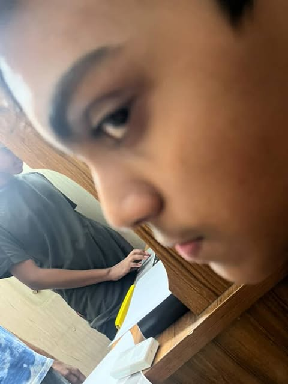
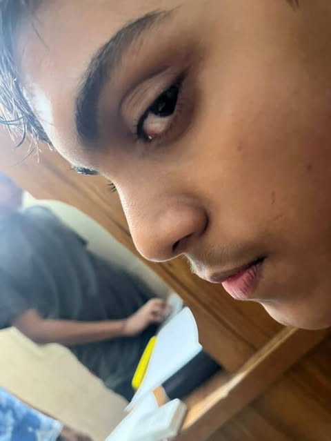
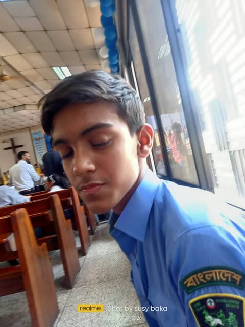
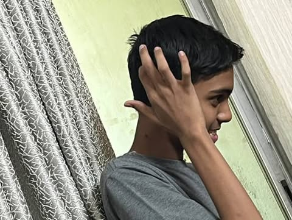
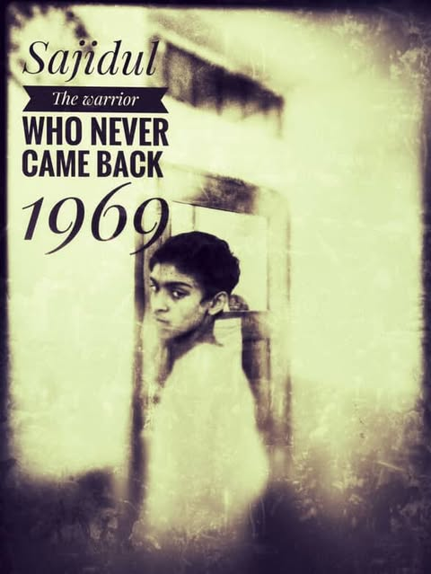
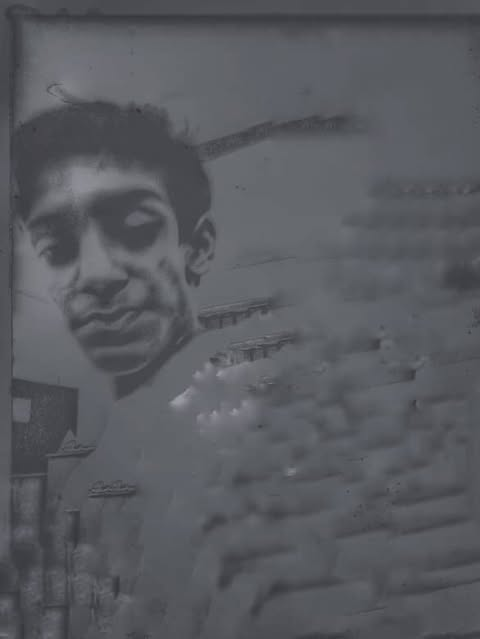
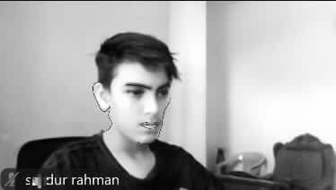
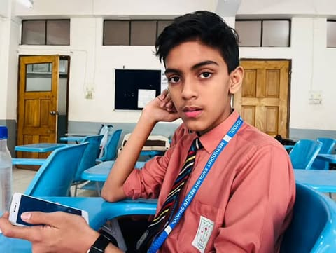
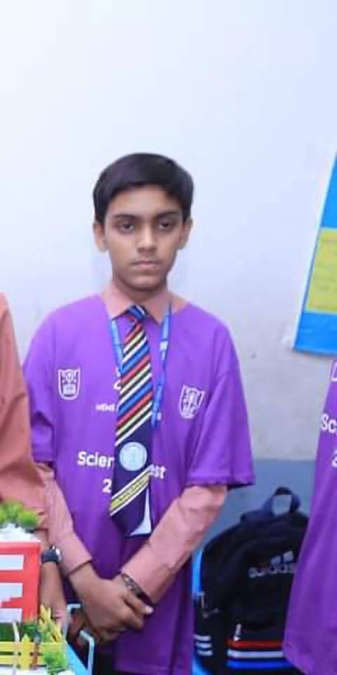
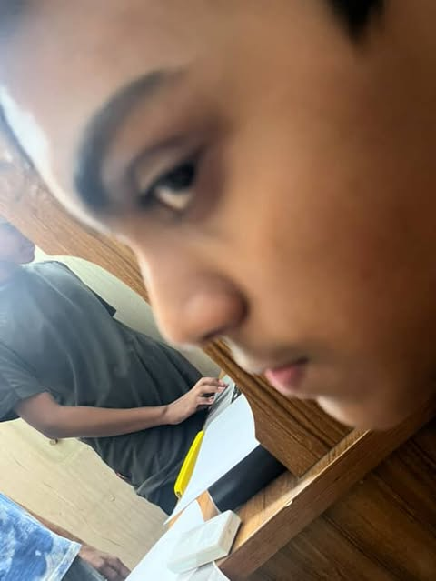
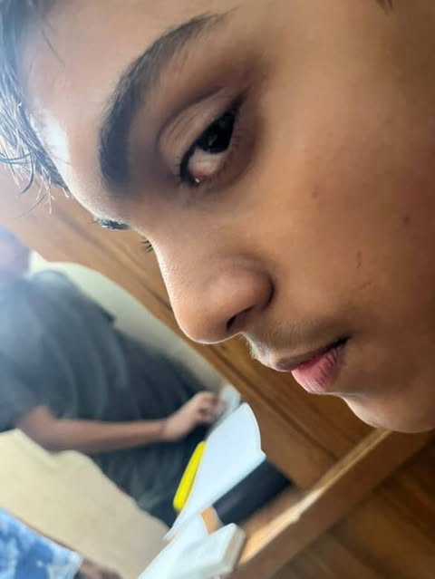
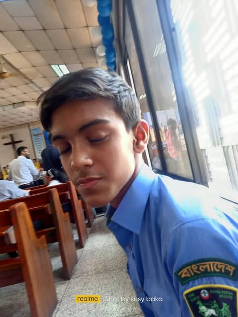
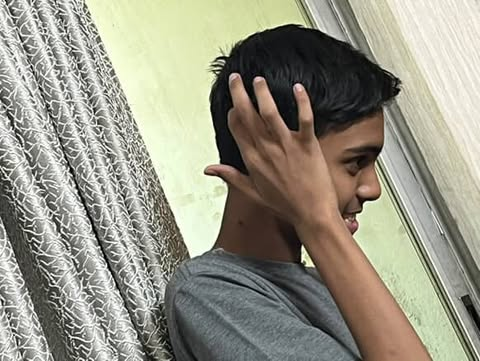
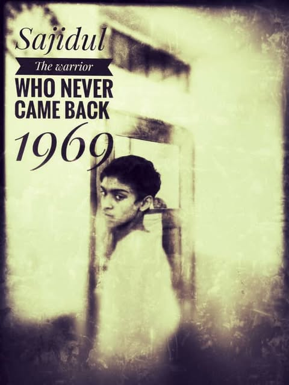
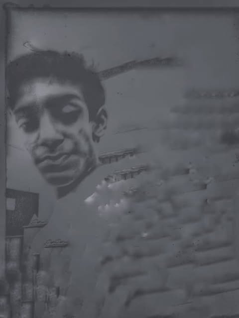
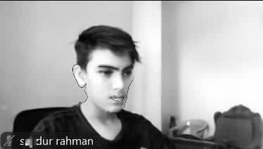
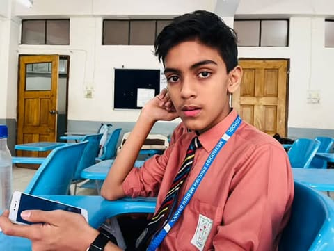
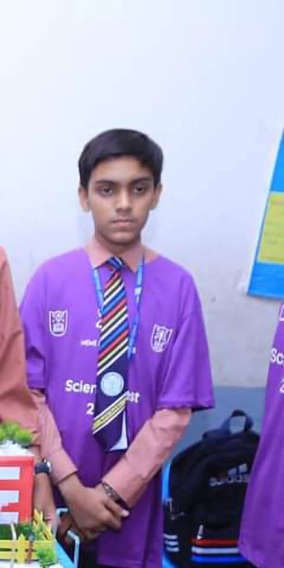